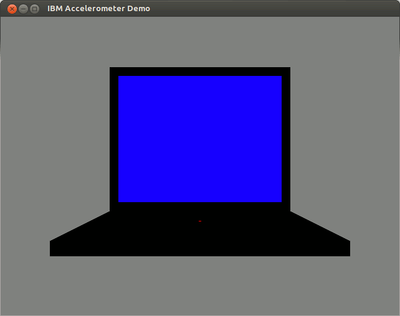

Festplattenschutz
Dieser Artikel wurde für die folgenden Ubuntu-Versionen getestet:
Ubuntu 16.04 Xenial Xerus
Ubuntu 14.04 Trusty Tahr
Zum Verständnis dieses Artikels sind folgende Seiten hilfreich:
 Dieser Artikel beschreibt den Softwareteil des aktiven Festplattenschutzes für IBM/Lenovo ThinkPads unter Linux, den IBM Active Protection System Linux Driver (HDAPS)
Dieser Artikel beschreibt den Softwareteil des aktiven Festplattenschutzes für IBM/Lenovo ThinkPads unter Linux, den IBM Active Protection System Linux Driver (HDAPS)  . Seit 2003 verfügen viele ThinkPad-Modelle auf der Hauptplatine über einen Bewegungs-Sensor, ein sogenanntes Accelerometer, das vor allem dazu dienen soll, den Lesearm der Festplatte im Falle eines Sturzes innerhalb von Millisekunden zu "parken", damit die Festplatte nicht beschädigt wird. Die hier vorgestellte Softwarelösung funktioniert mit allen aktuellen Notebook-Festplatten.
. Seit 2003 verfügen viele ThinkPad-Modelle auf der Hauptplatine über einen Bewegungs-Sensor, ein sogenanntes Accelerometer, das vor allem dazu dienen soll, den Lesearm der Festplatte im Falle eines Sturzes innerhalb von Millisekunden zu "parken", damit die Festplatte nicht beschädigt wird. Die hier vorgestellte Softwarelösung funktioniert mit allen aktuellen Notebook-Festplatten.
Einen ähnlichen Sensor haben u.a. Notebooks von Acer ("GraviSense") und Apple ("Sudden Motion Sensor"), allerdings gibt es dafür keine Software.
In jüngerer Zeit werden bestimmte Festplatten-Modelle für Notebooks mit einem integrierten Sensor ausgestattet, meist als "Free Fall Sensor" bezeichnet. Dieser Festplattentyp sorgt ohne Softwareunterstützung eigenständig für den Parkvorgang. Die Sensordaten jedoch sind nicht für die unten beschriebenen weiteren Anwendungen zugänglich.
Nicht unterstützte Hardware¶
Trotz eines vorhandenen Sensors unterstützt HDAPS nicht folgende Modelle:
ThinkPad-Baureihen S, SL, L, E/Edge sowie X100e und X121e – es wird eine andere Hardware eingesetzt, für die kein Treiber existiert
ThinkPad L430, L530, T430(s), T530, W530, X230 sowie alle neueren Baureihen – Kernelmodul
hdapslädt nichtNicht-ThinkPad-Baureihen von Lenovo
Notebooks anderer Hersteller
Installation¶
Vorbemerkung: es ist von Vorteil die im folgenden angegebenen Pakete für Kernelmodul und Überwachungsdämon einzeln nacheinander zu installieren. Tut man es stattdessen in einem Schritt, so zieht der Überwachungsdämon zunächst ein veraltetes Kernelmodul an, was einen Neustart erforderlich macht.
Kernelmodul hdaps installieren¶
Das in den offiziellen Kerneln enthaltene Modul hdaps ist für den Festplattenschutz nicht geeignet, deshalb wird hier eine gepatchte Version aus dem Projekt tp-smapi verwendet.
Zu installieren ist das Paket:
tp-smapi-dkms
 mit apturl
mit apturl
Paketliste zum Kopieren:
sudo apt-get install tp-smapi-dkms
sudo aptitude install tp-smapi-dkms
Konfiguration¶
Ubuntu 16.04 und neuer¶
Die Konfiguration des Überwachungsdämons wird in der Datei /etc/hdapsd.conf vorgenommen, die mit Root-Rechten editiert werden muss [3].
device="sda"; # eine Festplatte; entspricht Option -d device=["sda", "sdb"]; # mehrere Festplatten sensitivity=15; # höhere Werte bedeuten geringere Empfindlichkeit und umgekehrt; entspricht Option -s adaptive=true; # entspricht Option -a
Ubuntu 14.04¶
Die Konfiguration des Überwachungsdämons wird in der Datei /etc/default/hdapsd vorgenommen, die mit Root-Rechten editiert werden muss [3].
START=yes # falls hdaps beim Systemstart mitgestartet werden soll DISK=sda # oder sdb, hda, hdb; je nach Festplatte bzw. Kernel; entspricht Option -d SENSITIVITY=15 # höhere Werte bedeuten geringere Empfindlichkeit und umgekehrt; entspricht Option -s FORCEENABLE="no" # hdaps für die Platte erzwingen mit "yes"; entspricht Option -f OPTIONS="" # weitere Optionen
Der Punkt SENSITIVITY stellt die Empfindlichkeit ein (höhere Werte bedeuten eine geringere Empfindlichkeit).
Achtung!
Einige Benutzer berichten, dass mit dem Vorgabewert 15 der Schutz zu empfindlich eingestellt ist. Es empfiehlt sich daher stets einen Funktionstest zu machen und gegebenenfalls den Wert zu erhöhen. Andernfalls besteht die Gefahr frühzeitigen Verschleißes der Festplatte(n).
Die Option -a kann hinzugefügt werden, um bei Benutzung der internen Tastatur die Empfindlichkeit automatisch zu senken. Bei einigen Festplatten wird die HDAPS-Fähigkeit fälschlicherweise nicht erkannt, dann probehalber FORCEENABLE="yes" setzen.
Nach einer Anpassung der Konfiguration ist stets der Dämon mit
sudo service hdapsd restart
neu zu starten.
Funktionstest¶
Für den Test ist zunächst der bei der Installation automatisch im Hintergrund gestartete Dämon anzuhalten [4]
sudo service hdapsd stop
und im Vordergrund wieder zu starten mit
sudo hdapsd -d sda -s 15
Beim Funktionstest wird /etc/default/hdapsd nicht gelesen, da der Dämon direkt gestartet wird. Deshalb ist die Empfindlichkeit (und ggf. andere Optionen) wie gezeigt in der Kommandozeile anzugeben.
Nun das ThinkPad sanft "schütteln"; es sollten Ausgaben ähnlich dieser erscheinen:
Sun Oct 25 22:17:34 2009: Starting hdapsd Sun Oct 25 22:17:34 2009: WARNING: You did not supply any devices to protect, trying autodetection. Sun Oct 25 22:17:34 2009: Adding autodetected device: sda Sun Oct 25 22:17:34 2009: Selected interface: HDAPS Sun Oct 25 22:17:35 2009: Selected HDAPS input device: /dev/input/event21 Sun Oct 25 22:17:36 2009: parking Sun Oct 25 22:17:37 2009: un-parking Sun Oct 25 22:17:40 2009: parking Sun Oct 25 22:17:41 2009: un-parking
Nach dem Test den Dämon mit Strg + C beenden und wieder im Hintergrund starten mit
sudo service hdapsd start
Problembehebung¶
Fehlermeldung "Error! Not parked ..."¶
Erscheint beim Funktionstest die Meldung
Error! Not parked when we thought we were... (paged out and timer expired?)
so gibt es zwei mögliche Ursachen:
Es laufen mehrere Instanzen des Dämons, die sich gegenseitig in die Quere kommen
Die Festplatte ist nicht HDAPS-fähig (gilt insbesondere, wenn schon
FORCEENABLE="yes"gesetzt ist)
Den ersten Fall kann man überprüfen mit
ps -ef | grep hdapsd | grep -v grep
Wenn keine Ausgabe erfolgt, ist kein Dämon gestartet. Andernfalls stoppt man alle Instanzen mit
sudo killall hdapsd
und prüft erneut wie oben gezeigt.
Schlägt danach der Funktionstest erneut mit derselben Meldung fehl, so trifft die zweite Möglichkeit zu. In diesem Fall könnte ein Firmware-Update der Festplatte Abhilfe schaffen. Auf dieser Seite sind bekannte, nicht funktionierende Festplatten bzw. Firmware-Versionen mit "not parked" gekennzeichnet.
Fehlermeldung "WARNING: Could not find hdaps input device ..."¶
Die Ausgaben
WARNING: Could not find hdaps input device (No such file or directory). You may be using an incompatible version of the hdaps module. Falling back to reading the position from sysfs (uses more power). Use '-y' to silence this warning. Could not open /sys/devices/platform/hdaps/sampling_rate: No such file or directory. Do you have the hdaps module loaded?
weisen darauf hin, daß das Installieren des Kernelmoduls fehlgeschlagen ist. Dadurch wird das ungeeignete Modul hdaps aus dem Standard-Kernel verwendet. Dies kann man zusätzlich mit dem folgendem Befehl prüfen
modinfo hdaps
Das falsche Modul aus dem Standard-Kernel liefert
filename: /lib/modules/KERNEL-VERSION/drivers/hwmon/hdaps.ko ...
Das richtige Modul aus tp-smapi-dkms liefert
filename: /lib/modules/KERNEL-VERSION/updates/dkms/hdaps.ko ...
Fehlermeldung "Could not find a suitable interface"¶
Die Ausgabe
Could not find a suitable interface
weist darauf hin, dass das Modul hdaps nicht geladen werden konnte. Weitere Informationen zur Ursache liefert der Befehl
sudo modprobe -v hdaps
Sollte dort die Ausgabe
WARNING: Error inserting thinkpad_ec (/lib/modules/.../thinkpad_ec.ko): No such device or address
erscheinen, so sollte man mit den in tp-smapi (Abschnitt Problembehebung) beschriebenen Maßnahmen fortfahren.
Fehlermeldung "Could not read from /sys/block/sda/device/unload_heads ..."¶
Ursache der Meldungen
Could not read from /sys/block/sda/device/unload_heads: Operation not supported Could not detect any devices.
ist, dass die Festplatte nicht HDAPS-fähig ist bzw. die Fähigkeit nicht erkannt wird. Letzteres ist bei älteren IDE-Festplatten nach dem ATA-Standard < 7 der Fall. Solche Festplatten erkennt man an der Ausgabe des Befehls
sudo hdparm -I /dev/sda
Standards: Used: ATA/ATAPI-6 T13 1410D revision 3a Supported: 6 5 4
Zur Behebung kann man versuchsweise hdapsd mit der Option -f (und Angabe des Geräts) aufrufen:
sudo hdapsd -d sda -s 15 -f
War der Test mit -f erfolgreich, kann man die Einstellung in /etc/default/hdapsd übernehmen:
FORCEENABLE="yes"
Hinweis:
Um in diesem Fall sicherzustellen, daß die Köpfe tatsächlich geparkt werden, sollte man auf das beim Parken entstehende leise Klickgeräusch achten!
Erscheint hingegen mit -f die Fehlermeldung
Error! Not parked ...
so ist höchstwahrscheinlich die Festplatte nicht HDAPS-fähig. Weitere Hinweise dazu im betreffenden Abschnitt.
Optionale Anwendungen¶
Um den aktuellen Zustand der Festplatte dauernd im Blick zu haben, existieren Panel-Applets und Visualisierungsprogramme, welche die Daten des Sensors und das Verhalten des HDAPS-Dämons überwachen und darstellen. Inzwischen sind aber auch eine Reihe eher spielerischer Anwendungen entstanden, welche auf die Ablesungen insbesondere des Sensors zurückgreifen, um durch Klopfzeichen oder Schwenken des Laptops Prozesse auszulösen und Programme zu steuern. Einige Beispiele hierzu sind am Ende dieses Artikels zusammengetragen.
Panel-Anzeige des Festplattenschutzes¶
Unter Unity / GNOME 3¶
Unity-Benutzern steht gnome-hdaps-osd zur Verfügung. Diese Lösung ist auch kompatibel zu GNOME 3.
Unter Xfce¶
Seit Ubuntu 9.10 gibt es für Xfce ein Applet zum Visualisieren des HDAPS-Status. Dazu installiert man das Paket
xfce4-hdaps
mit apturl
Paketliste zum Kopieren:
sudo apt-get install xfce4-hdaps
sudo aptitude install xfce4-hdaps
und fügt danach das Applet dem Panel hinzu [5].
Weitere¶
Für den Avant Window Navigator gibt es das ThinkHDAPS Applet.
Visualisierungen der Raumlage¶

Es bestehen verschiedene kleine Anwendungen, die die aktuelle Raumlage des Laptops anzeigen können. Empfohlen sei hier hdaps-gl .
Installation aus PPA¶
Hierzu ist das ThinkPad Extras PPA  freizuschalten.
freizuschalten.
Adresszeile zum Hinzufügen des PPAs:
ppa:linrunner/thinkpad-extras
Hinweis!
Zusätzliche Fremdquellen können das System gefährden.
Ein PPA unterstützt nicht zwangsläufig alle Ubuntu-Versionen. Weitere Informationen sind der  PPA-Beschreibung des Eigentümers/Teams linrunner zu entnehmen.
PPA-Beschreibung des Eigentümers/Teams linrunner zu entnehmen.
Damit Pakete aus dem PPA genutzt werden können, müssen die Paketquellen neu eingelesen werden.
Nach dem Aktualisieren der Paketquellen kann das folgende Paket installiert werden:
hdaps-utils (ppa)
mit apturl
Paketliste zum Kopieren:
sudo apt-get install hdaps-utils
sudo aptitude install hdaps-utils
Die Echtzeit-Visualisierung kann danach mit folgendem Befehl aufgerufen werden [4]:
hdaps-gl
Beim Neigen des Notebooks bleibt die Raumlage des von hdaps-gl angezeigten Notebooks stabil. Neigt es sich in die falsche Richtung, so ist die Orientierung der Raumachsen zu korrigieren.
Mit hdaps-utils wird auch ein Programm namens hdaps-pivot installiert, das Lageveränderungen numerisch an die Konsole ausgibt. Es wird mit folgendem Befehl gestartet:
hdaps-pivot
Orientierung der Raumachsen korrigieren¶
Hinweis:
Die hier beschriebene Konfiguration ist für eine korrekte Funktion nur des Festplattenschutzes nicht notwendig!
Das Kernelmodul hdaps enthält eine Tabelle mit den richtigen Voreinstellungen für die Orientierung der Raumachsen vieler ThinkPad-Modelle. Für eine Änderung dieser Voreinstellungen (auch im Fall unbekannter Modelle) ist entweder beim Laden des Kernelmoduls hdaps der Modul-Parameter invert oder zur Laufzeit das Sysfs-Attribut /sys/devices/platform/hdaps/invert einzustellen.
| Parameter invert | ||
| Wert | R | P |
| 0 | X | Y |
| 1 | -X | -Y |
| 2 | -X | Y |
| 3 | X | -Y |
| 4 | Y | X |
| 5 | -Y | -X |
| 6 | -Y | X |
| 7 | Y | -X |
Der Parameter invert kann die Werte 0 bis 7 annehmen. In der nebenstehenden Tabelle geben X und Y die Ausgänge des Sensors, R ein seitliches Neigen des Notebooks und P ein Neigen nach vorne oder hinten an.
Am einfachsten ermittelt man die richtige Einstellung durch Ausprobieren:
sudo sh -c "echo W > /sys/devices/platform/hdaps/invert" hdaps-gl
wobei W durch den gewünschten Wert zu ersetzen ist. Nach jeder Änderung des Parameters muß hdaps-gl neu gestartet werden.
Soll die so ermittelte Einstellung dauerhaft eingerichtet werden, ist mit einem Editor mit Root-Rechten[4] die Konfigurationsdatei /etc/modprobe.d/hdaps.conf mit folgendem Inhalt zu erstellen:
options hdaps invert=W
Links¶
Allgemeine Informationen¶
Die Einträge im ThinkWiki zu APS, HDAPS und tp-smapi (alle
) Technische Daten zum Sensor http://www.analog.com/en/prod/0,2877,ADXL320,00.html
Weitere HDAPS-basierte Anwendungen¶
Arbeitsfläche wechseln durch Antippen des Laptops: SmackPad
bzw. gtollina  .
. Einen Bewegungs-Alarm einbauen: http://www.thinkwiki.org/wiki/Script_for_theft_alarm_using_HDAPS
(Vorsicht: dies ist kein wirksamer Diebstahlschutz!)
- Erstellt mit Inyoka
-
 2004 – 2017 ubuntuusers.de • Einige Rechte vorbehalten
2004 – 2017 ubuntuusers.de • Einige Rechte vorbehalten
Lizenz • Kontakt • Datenschutz • Impressum • Serverstatus -
Serverhousing gespendet von